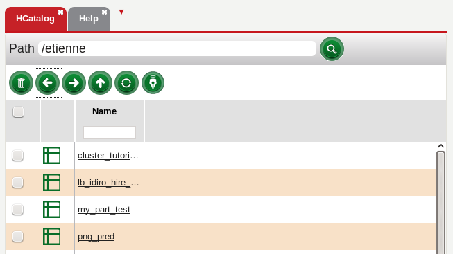
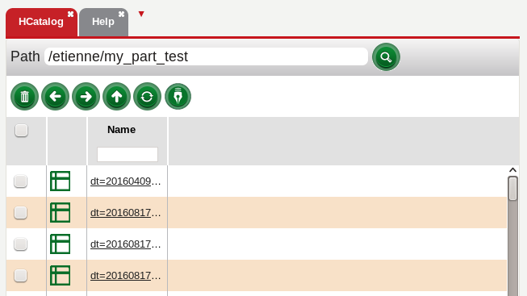
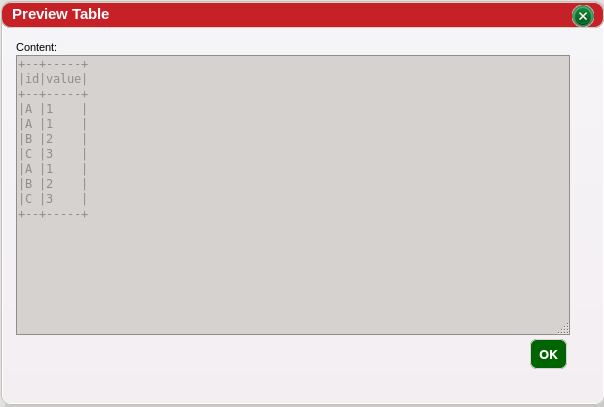
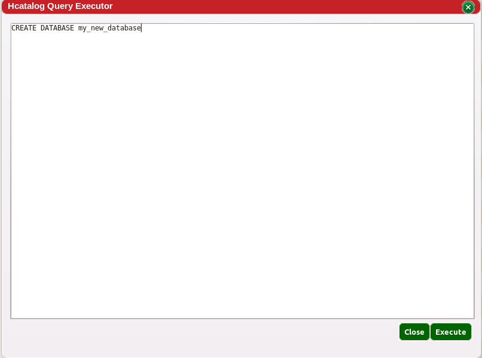

HCatalog, accessed by clicking the red drop down arrow next the Help, Canvases, or by creating a new section by dragging a splitter down, lists all the existing Hive databases, tables and partitions that the user can access.
 Clicking on the name of the table opens up a preview of the table.
The user can also run very simple SQL data definition commands from HCatalog using the script button .
